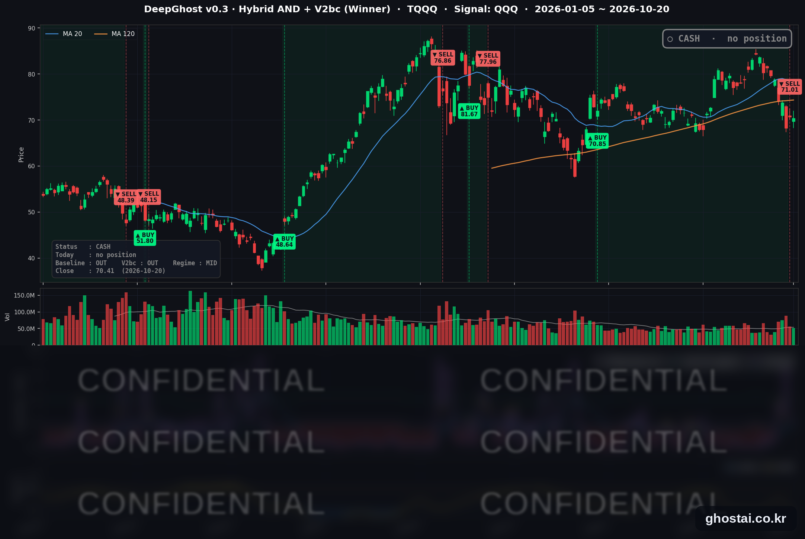

S&P 500 종목 81% 상승, 대형 기술주 약세
· Ghost.AI 데일리 리포트
👻 매일 시그널과 히스토리를 홈페이지에서 한눈에 → www.ghostai.co.kr
회원 페이지 안내 — 회원 가입하시면 커버리지 전 종목의 원본 시그널과 분석 레포트를 매일 확인하실 수 있습니다. 회원 페이지는 블로그·유튜브보다 먼저 업데이트됩니다. 지금 베타 회원을 받고 있으며, 이메일과 필명만으로 가입하실 수 있고 서비스 사용료는 받지 않습니다. 이메일 확인 후 바로 이용하실 수 있습니다.
한 줄 요약: 화요일 미국 증시는 S&P 500 구성종목 열 개 중 여덟 개가 올랐지만, 애플·알파벳·메타 등 대형 기술주가 내려 나스닥 종합은 보합(-0.02%)으로 마감했습니다. 전략은 10월 19일 시가에 TQQQ 를 매도한 뒤 현금 보유 이틀째이며, 오늘 새 신호는 없습니다.
📊 오늘의 매매 신호
| 항목 | 내용 |
|---|---|
| 오늘의 신호 | 🟡 신규 신호 없음 — 전략은 현금 보유를 유지합니다 |
| 포지션 상태 | 💵 현금 보유 중 (OUT OF POSITION) |
| 현금 보유 기간 | 2026-10-19 ~ (2일째) |
| TQQQ 종가 | $70.41(-0.33%) |
TQQQ 시그널 — OUT OF POSITION
현재 상태: 현금 보유 중 | 신규 신호 없음

전략은 10월 19일(월) 미국 장 시가 71.01달러에 TQQQ 를 매도했습니다. 8월 6일 시가 70.85달러에 매수해 51거래일 보유했고, 이번 거래의 전략 수익률은 +0.23% 입니다. 어제 글에 적은 71.00달러는 장 마감 직후 잠정치였고, 확정 시가는 71.01달러입니다.
TQQQ 는 10월 20일 0.33% 내린 70.41달러로 마감해 매도 가격보다 0.84% 낮습니다. 전략은 TQQQ 를 다시 매수하는 신호가 나올 때까지 현금 보유를 유지합니다.
전략의 신호는 나스닥 100 지수를 따르는 QQQ 를 기준으로 계산합니다. 그래서 오늘처럼 시장 전체가 올라도 대형 기술주가 내리면 신호에는 거의 영향이 없습니다. 시장 전체의 하루 반등보다 나스닥 대형 기술주가 며칠 이어서 오르는지가 전략에는 더 중요합니다.
오늘 미국 시장 — 시황 요약
지수 마감
| 지수 | 종가 | 등락률 |
|---|---|---|
| S&P 500 | 7,712.57 | +0.28% |
| 나스닥 종합 | 26,424.82 | -0.02% |
| 다우존스 | 52,495.88 | +1.02% |
| 러셀 2000 (IWM) | 275.78 | +1.66% |
| QQQ (나스닥100) | 717.63 | -0.10% |
| TQQQ | 70.41 | -0.33% |
| 반도체 ETF (SOXX) | 500.01 | -0.38% |
소형주와 전통 업종이 시장을 이끌었습니다. IWM 의 +1.66% 는 8월 4일 이후 가장 큰 하루 상승이고, 다우는 529.85포인트 올랐습니다. 반면 반도체 장비주(램리서치 -3.21%, KLA -2.80%)가 약해 SOXX 는 0.38% 내렸습니다. 사상 최고 종가를 낸 지수는 없습니다.
국채 금리 동향
| 만기 | 10/19 종가 | 10/20 종가 | 전일 대비 |
|---|---|---|---|
| 3개월 | 4.075% | 4.080% | +0.5bp |
| 5년 | 4.929% | 4.935% | +0.6bp |
| 10년 | 5.136% | 5.117% | -1.9bp |
| 30년 | 5.472% | 5.425% | -4.7bp |
5년 이하 만기는 거의 움직이지 않았고 장기물만 내렸습니다. 30년물 -4.7bp 는 10월 15일 이후 가장 큰 하루 하락입니다. 9월 주택착공이 5.2%, 9월 미결 주택매매가 7.3% 줄어 주택 경기 둔화 쪽 자료가 나온 것이 배경입니다. 10년물과 3개월물의 차이는 103.7bp(전일 106.1bp)로 좁혀졌고, 커브는 역전 없는 우상향입니다. 재무부 자료 기준 2년물은 4.77%에서 4.79%로 거의 그대로였습니다.
연준 발언 & 금리 패스
- 발언 없음 — 연준은 10월 17일(토)부터 10월 29일(목)까지 FOMC 전후 발언 금지 기간입니다.
- 시장 정리 기사가 인용한 CME FedWatch 기준 10월 27~28일 회의의 인상 확률은 14.9%로, 1주 전 22.1%보다 낮아졌습니다. 시장은 이번 회의 동결을 기본 시나리오로 보고 있습니다.
- 정책금리는 3.75~4.00%입니다. 단기물 금리가 그대로라 정책금리 기대에는 변화가 없었습니다.
오늘의 핵심 이슈
- 구성종목 81%가 올랐지만 대형 기술주가 내렸습니다. S&P 500 구성종목 492개 중 399개가 올랐고 등락률 중간값은 +1.27%로 지수(+0.28%)보다 약 1%p 높았습니다. 메타(-1.59%)·알파벳(-1.13%)·애플(-1.00%) 등이 내려 나스닥은 보합에 그쳤습니다. 업종별로는 헬스케어(중간값 +1.88%)와 금융이 강했고, 정보기술은 11개 업종 중 열 번째였습니다.
- 실적과 장기 금리 하락에 다우와 소형주가 올랐습니다. 3M 은 예상을 웃돈 실적과 연간 전망 상향으로 5.78%, 노스롭그루먼은 4.57% 올랐습니다. GM 은 이익이 예상을 웃돌았지만 연간 전망 범위를 좁혀 6.84% 내렸습니다. 장기 금리가 내리면서 주택건설·유틸리티·부동산 종목이 함께 올랐습니다.
- 넷플릭스가 대형 기술주 실적 발표를 시작했습니다. 3분기 주당순이익은 0.87달러로 시장 예상(0.82달러)을 웃돌았지만, 4분기 매출 전망 134억 달러가 예상(약 135억 달러)에 못 미쳤고 올해 광고 매출 전망도 낮췄습니다. 정규장에서 1.66% 내린 주가는 시간외 거래에서 5% 넘게 더 내렸습니다.
변동성 & 투자심리
VIX 는 6.13% 내린 17.31 로 10월 15일 이후 가장 낮은 종가를 기록했습니다. CNN 공포탐욕지수는 27.2 로 '극단적 공포'(전일 23.1)에서 '공포' 구간으로 올라왔습니다. 오른 종목이 많아 심리는 전일보다 나아졌지만, 대형 기술주가 실적을 앞두고 약해 공포 구간을 벗어나지는 못했습니다.
매크로 & 원자재
| 품목 | 종가 | 등락률 |
|---|---|---|
| 원유 ETF (USO) | $160.61 | -0.12% |
| 금 ETF (GLD) | $377.65 | -0.54% |
- 유가: USO 기준 0.12% 내려 변동이 크지 않았습니다.
- 금: GLD 는 0.54% 내려 3거래일 연속 약세입니다.
주요 종목 동향
| 종목 | 종가 | 등락률 | 비고 |
|---|---|---|---|
| TSLA | 373.71 | +1.54% | 10/21 장 마감 후 3분기 실적 |
| QCOM | 175.71 | +1.26% | |
| AMZN | 262.63 | +0.07% | 전일 +4.98% 뒤 보합 |
| AVGO | 334.37 | -0.07% | |
| NVDA | 216.47 | -0.29% | |
| MSFT | 531.87 | -0.31% | |
| INTC | 91.69 | -0.37% | |
| MU | 896.07 | -0.98% | 반도체 장비·메모리 약세 |
| AAPL | 339.50 | -1.00% | 2거래일 연속 하락 |
| GOOGL | 340.28 | -1.13% | 10/1 이후 최저 종가 |
| META | 694.25 | -1.59% | 5거래일 연속 하락, 10/21 장 마감 후 실적 |
| NFLX | 68.69 | -1.66% | 장 마감 후 실적 발표, 시간외 5~6% 하락 |
커버리지 12종목 중 9종목이 내렸습니다. 구성종목 대부분이 오른 날이었지만, 이날 상승은 대형 기술주 밖에서 나왔습니다.
다음 일정 (미 동부시간)
- 10/21(수) 장 시작 후 넷플릭스 실적에 대한 정규장 반응 / 장 마감 후 테슬라(17:30 웹캐스트)·메타(16:30 컨퍼런스콜) 3분기 실적
- 10/27~28 FOMC (발언 금지 기간 10/17~10/29)
Ghost.AI — Quantitative AI Investment
Model: DeepGhost v0.3 | Transformer-Based Deep Learning
Coverage: 14 tickers | Updated every trading day after US market close
⚠️ 본 자료는 정보 제공 목적으로만 작성되었으며 투자 권유가 아닙니다. 모든 투자의 책임은 투자자 본인에게 있습니다. 과거 성과가 미래 수익을 보장하지 않습니다.
[유의사항]
- 본 서비스는 불특정 다수를 대상으로 발행되는 단방향 정보 제공 서비스이며, 투자자 개인의 재산 상황·투자 목적·위험 선호도를 반영한 개별 투자 조언이 아닙니다.
- 고스트에이아이 주식회사는 고객과 쌍방향 의사소통(개별 상담, 맞춤형 자문 등)을 제공하지 않습니다.
- 본 콘텐츠는 투자 권유 또는 매매 주문의 청약·청약의 권유에 해당하지 않으며, 최종 투자 판단 및 그에 따른 손익의 책임은 전적으로 투자자 본인에게 있습니다.
고스트에이아이 주식회사